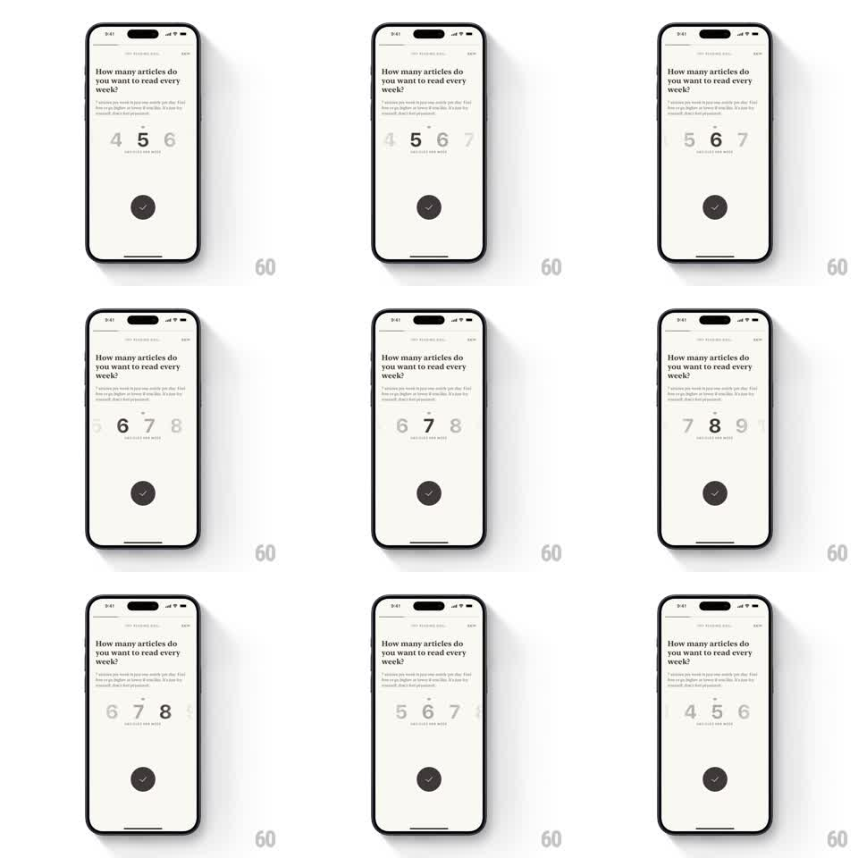

Media
Frame-by-frame

Rebuild this interaction 1:1: Alfread's weekly-goal picker - a horizontal reel of large numerals scrolls and snaps under the question "How many articles do you want to read every week?", with the centered number large and dark while neighbors shrink and fade.

Rebuild this interaction 1:1: Alfread's weekly-goal picker - a horizontal reel of large numerals scrolls and snaps under the question "How many articles do you want to read every week?", with the centered number large and dark while neighbors shrink and fade. ## Integration Integration: stack-agnostic spec - springs given as stiffness/damping, timed motions as duration + curve; map every value to your framework and animation library of choice. ## Scene Cream (off-white) minimal screen. Top: small step header. Serif headline "How many articles do you want to read every week?" with a small body paragraph. Center: a horizontal reel of numerals (single digits), the selected one large and near-black with an "ARTICLES PER WEEK" micro-caption under it. Bottom: a round dark button with a white check. ## Motion spec Pattern: snapping numeral reel with scale-and-fade hierarchy. - The reel scrolls 1:1 with the drag; on release it snaps to the nearest number (spring stiffness ~280, damping ~26, ~300ms with a small overshoot). - Numbers interpolate continuously with distance from center: scale from 1.0 (center) to ~0.55, opacity from 1.0 to ~0.25 over two positions - no discrete jumps. - A short tick mark sits above the reel's center as the selection indicator; it stays fixed while numbers flow under it. - Each snap fires a subtle haptic-timed bump: the selected number overshoots scale 1.0 to 1.08 and settles (150ms). - The check button confirms with a press scale (0.92, 100ms, spring back). ## Calibration - The continuous scale/opacity interpolation is the whole effect - snapped styling reads as a segmented control, not a reel. - Keep 3 to 4 numbers visible on each side; clipping tighter loses the sense of a wheel. ## Reduced motion Reel snaps without the scale bump; distance styling still applies (it is information, not decoration). ## Don't miss - The caption under the number belongs to the selection, not the reel - it always sits under the center value. - Cream background, near-black ink, one accent: keep the palette at two tones.